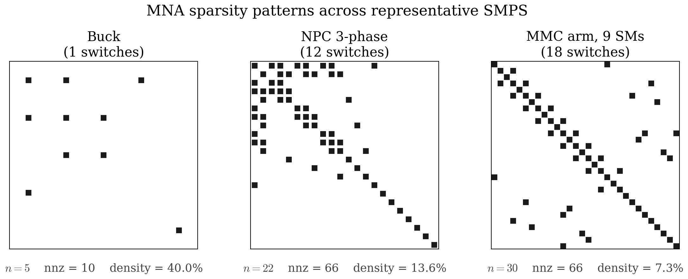

2. Modified Nodal Analysis (MNA) Foundations¶
A circuit is a network of nodes connected by branches. To simulate a circuit, we need to turn that network into a system of equations a computer can solve. This chapter walks the mechanics of Modified Nodal Analysis (Ho, Ruehli & Brennan, IEEE Trans. Circuits & Systems 22(6), 1975) — the formulation Pulsim uses end-to-end.
By the end you'll know:
- What KCL stamps look like for resistors, capacitors, inductors, voltage sources, and switches
- Why voltage sources force the MNA matrix to be augmented (the "modified" in MNA)
- How a complete buck converter MNA system gets assembled
- What "sparse" actually means for SMPS matrices, and why it matters for the chapters that follow
2.1 KCL at a node, in matrix form¶
Kirchhoff's Current Law (KCL) says the sum of currents into any node is zero. For a node \(i\) connected to a set of branches \(\mathcal{B}_i\), that's:
For a purely resistive branch between nodes \(a\) and \(b\) with conductance \(G = 1/R\), Ohm's law gives \(I_{ab} = G\,(V_a - V_b)\). Writing KCL at node \(a\):
Stack this for all nodes, with the unknowns being the node voltages \(\mathbf{V} = [V_1, V_2, \ldots, V_{N-1}]^T\) (ground is fixed at \(V_0 = 0\)), and you get a matrix equation:
where \(G\) is the node conductance matrix and \(\mathbf{I}_{\mathrm{inj}}\) collects the injected currents from independent sources. The "stamping rule" for a resistor — the modification to \(G\) when you add a resistor between \(a\) and \(b\) — is:
This is the resistor stamp. Every circuit primitive has its own stamp; the assembler walks all branches and accumulates them into a single \(G\) matrix.
2.2 What capacitors and inductors do¶
A capacitor satisfies \(I_C = C\,\dot{V}_C\) and an inductor satisfies \(V_L = L\,\dot{I}_L\). These are time-derivative relationships, so they belong on the left-hand side of the system equations as descriptor-form dynamics:
where:
- \(\mathbf{x}\) is the state vector (node voltages + branch currents that need to be explicit)
- \(E\) is the mass matrix (carries \(C\) entries on capacitor-row diagonals, \(-L\) entries on inductor-current rows)
- \(A\) is the conductance matrix (the \(G\) matrix from §2.1 generalised to include source-augmentation rows)
- \(B\mathbf{u}\) is the source vector
Chapter 3 explains how to discretise this descriptor form into the per-step linear system the PWL cache stores. For now, the key fact is: both \(E\) and \(A\) are sparse, structured, and constant within one switch mask.
2.3 Voltage sources: why MNA gets "modified"¶
A pure voltage source has zero internal resistance — its defining equation is \(V_a - V_b = V_{\mathrm{src}}\), not "current depends on voltage". You cannot stamp it into the conductance matrix the way you would a resistor.
The fix is to introduce one new unknown per voltage source: the source's branch current \(I_{\mathrm{src}}\), treated as a state in its own right. The source then contributes:
- A KCL contribution at each terminal: current \(I_{\mathrm{src}}\) flows out of node \(a\) into node \(b\).
- A constraint row that says \(V_a - V_b = V_{\mathrm{src}}\) (the source's defining equation).
The matrix grows by one row + one column per voltage source. The stamp looks like:
| V_a V_b ... I_src | RHS
--------+--------------------------------+----------
KCL_a| . . ... +1 | 0
KCL_b| . . ... -1 | 0
| |
constr. | +1 -1 ... 0 | V_src(t)
This augmented form — node-voltage rows plus per-source
branch-current rows — is the "Modified" in Modified Nodal
Analysis. Pulsim's Index n_state = num_nodes + num_voltage_sources
sizing convention (in pwl/device_pool.hpp) directly reflects
this rule.
2.4 A worked example: assembling a buck¶
The synchronous buck converter has 4 nodes plus ground and 1 voltage source:
graph LR
gnd((gnd))
Vin((Vin))
Sw((Sw))
Lout((Lout))
Vout((Vout))
Vsrc[Vdc=10V] === gnd
Vsrc === Vin
HS[High-side<br/>switch S0] === Vin
HS === Sw
LS[Low-side<br/>switch S1] === Sw
LS === gnd
L[L = 100µH] === Sw
L === Lout
Cout[C = 100µF] === Lout
Cout === gnd
Rload[R = 5Ω] === Lout
Rload === gndFigure 2.1 — Synchronous buck converter schematic. Two switches (S0 = high-side, S1 = low-side) commute around the inductor; ground is the reference node.
The graph has 5 nodes (counting ground) — gnd, Vin, Sw,
Lout, Vout. Wait — actually for this schematic there are 4
distinct non-ground nodes (Vin, Sw, Lout, Vout), but Lout
and Vout are the same node (the inductor's right terminal is
the output capacitor's top terminal). So we have:
- 4 non-ground nodes:
Vin = 1,Sw = 2,Vout = 3, and one auxiliary node we'll need from the source augmentation. - 1 voltage source → 1 augmentation row/col.
State size \(n = 4 + 1 = 5\).
Initial conductance matrix \(G\) (with switches [S0=ON, S1=OFF],
the buck's "energising" phase):
with rows = [Vin, Sw, Vout, Vsrc_constraint] and columns the
same. \(G_{S0} = 10^3\) (high-side switch, conducting),
\(G_{S1} = 10^{-9}\) (low-side switch, blocking),
\(G_R = 1/5 = 0.2\), \(G_C = 0\) for now (capacitor's \(G\) contribution
comes from discretisation — see chapter 3).
The state vector is:
The mass matrix \(E\) has zeros everywhere except the capacitor row: \(E_{\mathrm{Vout, Vout}} = C = 100\text{ µF}\), and the inductor row (if we treated \(I_L\) as an explicit state, which Pulsim chooses not to for the buck — see chapter 4).
The right-hand side \(\mathbf{b}\) has \(V_{\mathrm{dc}} = 10\) V in the constraint row. Putting it together:
That's a complete MNA system for the buck in its energising phase.
When the mask flips to [S0=OFF, S1=ON] the \(G_{S0}\) and \(G_{S1}\)
values swap their roles in the matrix — but the sparsity pattern
is identical. This sparsity-pattern invariance under switch
toggling is the structural property that makes Chapter 7's
path-based partial refactor possible.
2.5 What "sparse" looks like for real SMPS¶
The buck above is only 4×4 — too small to show structure. A representative production matrix is the NPC three-phase inverter (\(n = 22\)) or the MMC arm (\(n = 30+\)). Their sparsity patterns:

Figure 2.2 — Sparsity patterns of representative SMPS MNA matrices. Each black dot is a nonzero entry. The buck is dense relative to its tiny size (10 nonzeros out of 16 = 62 %); NPC is 12 % dense; MMC is 7 % dense and falls roughly into a banded structure that elimination-tree-based factorisations exploit very efficiently (chapter 5).
Three observations matter for what comes next:
- The diagonal is always populated. Every node has at least a small self-conductance (otherwise the system is singular).
- Off-diagonal nonzeros are local. A nonzero at \(G_{ij}\) means nodes \(i\) and \(j\) are directly connected by a branch. Real SMPS topologies are graphs where most node pairs are non-adjacent → most \(G_{ij}\) are zero.
- Constraint rows from voltage sources are spike-like. They add a row/column that's zero except at the terminal nodes + the \(\pm 1\) pattern shown in §2.3 — extremely cheap to factor.
The MMC's bandedness is not accidental: it comes from the fact that submodule \(k\) is electrically adjacent only to submodules \(k-1\) and \(k+1\) within the arm. RCM ordering (chapter 5) is the algorithm that recovers this banded structure for any topology where it exists naturally.
2.6 The general form Pulsim uses¶
For any switch mask \(\mathbf{m}\), Pulsim assembles:
where:
- \(E\) depends only on the passive RLC components — not on the switch mask. The mass matrix is shared across all \(2^{N_{\mathrm{sw}}}\) topologies.
- \(A(\mathbf{m})\) depends on the switch mask through the \(g_{\mathrm{on}} / g_{\mathrm{off}}\) stamps. The sparsity pattern is invariant under \(\mathbf{m}\); only the conductance values change.
- \(B\mathbf{u}(t)\) is the time-varying source vector. Source values move; their stamps are fixed.
This form is the input to chapter 3 (where we discretise it) and chapter 4 (where we cache the discretised version per mask).
2.7 Where this lives in the codebase¶
| Concept | Header | Notes |
|---|---|---|
| Stamping primitives (resistor, capacitor, source, switch) | core/include/pulsim/pwl/assemble.hpp |
One stamp_* function per device kind |
| State-vector sizing | core/include/pulsim/pwl/device_pool.hpp |
state_size(graph) = num_nodes + num_voltage_sources |
| Per-mask matrix assembly | core/include/pulsim/pwl/cache.hpp |
PwlStateSpaceCache::build_lazy(dt) calls the assembler for each mask |
| The MNA mass matrix construction | core/include/pulsim/analysis/mna_sweep.hpp assemble_E_matrix() |
The reference for what goes into \(E\) |
2.8 Takeaways¶
- MNA turns a circuit (nodes + branches) into a sparse linear system \(A\mathbf{x} = \mathbf{b}\) via stamping rules — one rule per device kind.
- Voltage sources need augmentation: one extra row + column per source. State size grows accordingly.
- The MNA matrix is sparse (most node pairs are non-adjacent) and structured (the sparsity pattern is invariant under switch toggles — only the values change).
- Both invariances — sparsity and pattern-under-mask — are what Pulsim's chapters 4–7 exploit to skip work other simulators do.
2.9 Further reading¶
- MNA, original paper: Ho, Ruehli & Brennan, "The modified nodal approach to network analysis", IEEE Trans. Circuits & Systems 22(6):504-509, 1975. The definitive source.
- Stamping rules for every device kind: Vlach & Singhal, Computer Methods for Circuit Analysis and Design, Van Nostrand Reinhold, 1994 — chapters 4-6 walk through resistor, capacitor, inductor, controlled-source, transformer, op-amp stamps in reference detail.
- Sparse-direct considerations for circuit MNA: Davis, Direct Methods for Sparse Linear Systems, SIAM 2006 — chapter 1 motivates why circuit simulation drove the development of sparse LU.
- In this doc set — Chapter 5 — Sparse Direct LU Foundations explains how this sparsity is exploited to factor \(A\) in \(O(\mathrm{nnz} \cdot \log n)\) instead of \(O(n^3)\).